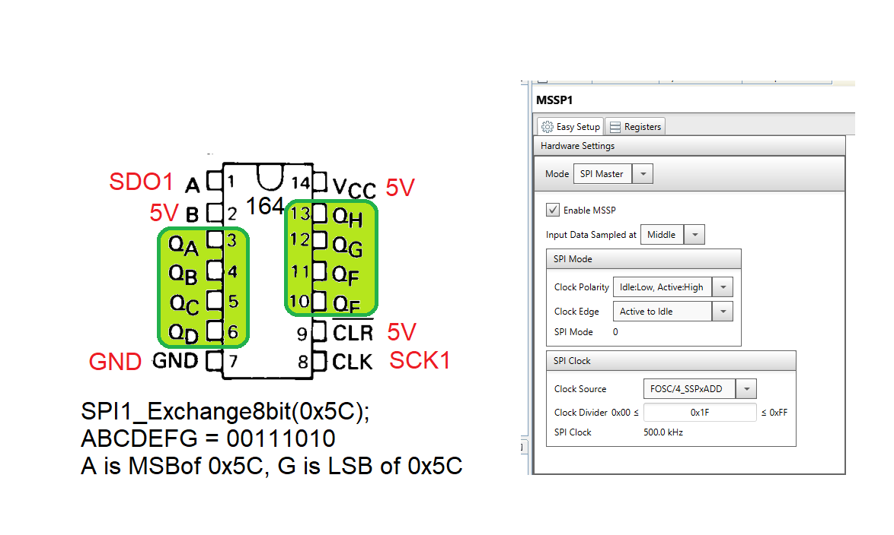
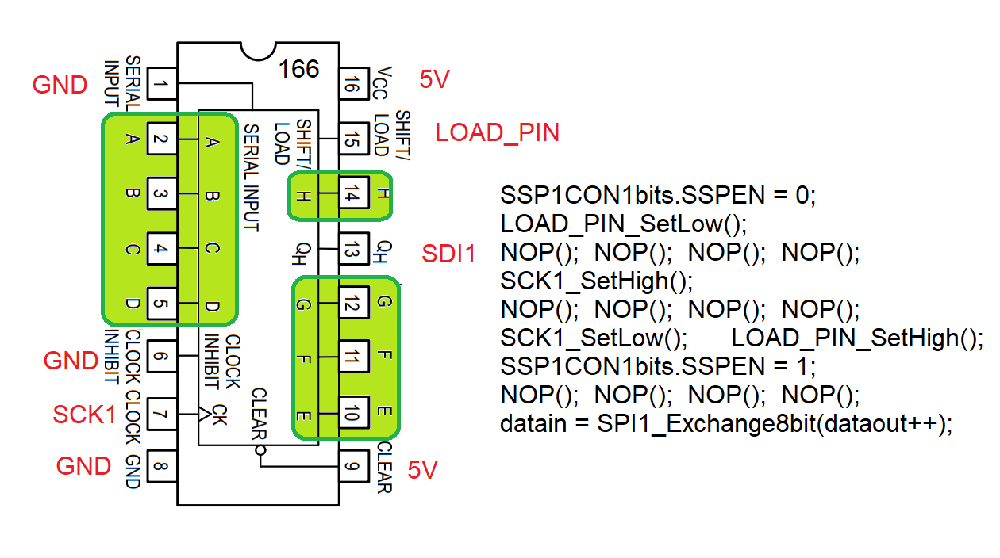

EENG 383
Port Extender
Basic Idea
When working on any project with a microcontroller, an embedded engineer
need be concerned with which devices are connected to which pins.
In many cases, there is not a choice, an I2C perherpial must be connected
to the pins associated with the I2C subsystem. On a sufficently complex
project, there may come a point where the number of I/O pins required
by the perherphial devices exceed the number of I/O pins on the
microcontroller. When this happens, there are a couple of choices.
In some cases, it may be best to replace the microcontroller you are
using with one that has more I/O. This replacement offers you the
oippurtunity to reevaluate the performance (speed and I/O) of the
current microcontroller and the expanding list of perhipheral devices
that are being integrated with it. Replacing the microcontroller is
a big deal, perhaps requiring the engineering team to change software
and spin new PCBs. Not a light decision, epsecially late in a design.
If you are running low on I/O ports there is another option, use a
port expander.
A port expander is any digital device that offers more I/O ports
than it uses. The increased number of I/O ports comes at a cost,
usually time and/or functionality. At a high level, there are
two types of port expander, combination and sequential. Combinational
port expansion typically uses decoders or multiplexers and we will
not discuss them further. Sequential port expanders use some form
of shift register to shift in or out the outputs or inputs. These
will be our focus in the coming paragrahs.
Expanding the number of output
In order to increase the number of outputs from a microcontroller,
one common chips that you can use is the 74HC164, 8-bit parallel-out
serial shift register. This chip takes a clock and data line as
input and shifts in values on the data line (A and B) on the positive edge
of the clock CLK into a hift register. The output of the shift register is
sent to the 8 output pins, Q
A … Q
H.
The easiest way to interface to this chip is through the PICs SPI
module. A sample configuration is shown below at right. Some of the
pins are hardwired to constant voltages as shown. The HC varients of
the chip should operate fine at 3.3V.

In order to accomodiate designs requiring more than 8-bits, two or
more 74HC164 can be connected in series, daisy-chaining them together.
This can be acomplished by sharing a common clock to all the 74HC164
chips. The Q
H of one 74HC164 is then connected to the A input
of the next 74HC164, creating a longer shift register.
As alway consult the technical documents for detailed on the function
of the pins.
Expanding the number of input
The 74HC166 is a 8-bit parallel input, serial output devices. The
inputs are provided through the A … H inputs. A positive
logic level on the SHIFT/LOAD pin accompanied with a positive edge on
CLOCK pin, causes the 74HC166 to latch the inputs into an internal
shift register. Then the SPI subsystem of the PIC can be used to
send a dummy piece of data to the 74HC166. The 74HC166 ignores the
SDO line of the SPI and instead uses the clock pulses generated
by the SCLK pin of the PIC to send out data from the Q
H
pin to the SPI subsystem of the PIC.

Several 74HC166 can be daisy-chained together by having all the 74HC166's
share the SCK and LOAD_PIN. The Q
H output of one 74HC166 is
attached to the SERIAL_INPUT pin of the next 74HC166 forming a longer
shift register. You would need to perfom multiple SPI reads in order
to read in the longer shift register. As always, consult the 74HC166
technical documents as well as the PIC techinical documents to determine
the best harward connections and software calls.